Những ảnh cần tìm nguồn thay thế
80 vị trí photo · 29 brief chủ đề · 12 thumbnail tài liệu cần bản thật · 3 bản đồ gốc khóa nguyên trạng
Inventory cho việc thay ảnh về sau. Demo hiện dùng chính ảnh từ screenshot: xem các vùng đã tách. Chưa tìm/tải ảnh bên ngoài hoặc code website. Không kết luận ảnh nào là AI. Khung màu chỉ là overlay trong báo cáo; file archive và bản đồ gốc PDF 8/9/11 giữ nguyên tuyệt đối.
Bảng đầy đủ · CSV · Quyết định mới nhất
CẦN TÌM ẢNH CHỤP THAY
LẤY PREVIEW TỪ TÀI LIỆU THẬT
KHÓA — GIỮ BẢN ĐỒ GỐC
GIỮ — MAP CHƯA RÕ PROVENANCE
GIỮ MINH HỌA ĐƯỢC CHỈ ĐỊNH
CHƯA THAY — ẢNH GẮN MAP/DIAGRAM
DỰNG UI — KHÔNG TÌM ẢNH STOCK
PDF 8 — Official Community Plan boundary map
Mở file gốc không overlay · 1544 × 1621
- P008-01 — Official Community Plan boundary map
KHÓA — GIỮ BẢN ĐỒ GỐC · File nhúng độc lập từ PDF; tính nguyên bản trích xuất không tự xác minh GIS/data. Giữ nguyên tuyệt đối.
Section: H-02, R-06
PDF 9 — Land, parcels and conservation map
Mở file gốc không overlay · 2047 × 1351
- P009-01 — Land, parcels and conservation map
KHÓA — GIỮ BẢN ĐỒ GỐC · File nhúng độc lập từ PDF; tính nguyên bản trích xuất không tự xác minh GIS/data. Giữ nguyên tuyệt đối.
Section: H-03, H-04, R-06
PDF 11 — Road network and traffic map
Mở file gốc không overlay · 2046 × 1432
- P011-01 — Road network and traffic map
KHÓA — GIỮ BẢN ĐỒ GỐC · File nhúng độc lập từ PDF; tính nguyên bản trích xuất không tự xác minh GIS/data. Giữ nguyên tuyệt đối.
Section: H-05, R-06
PDF 13,35 — Map comparison - panel 1
Mở file gốc không overlay · 661 × 750
- P013-01 — Toàn bộ panel tham chiếu map (dùng lại ở Roads)
GIỮ MINH HỌA ĐƯỢC CHỈ ĐỊNH · Giữ panel gốc và map trong panel; không tìm ảnh thay cho map.
Section: H-02, R-06
PDF 14,36 — Map comparison - panel 2
Mở file gốc không overlay · 661 × 1040
- P014-01 — Toàn bộ panel tham chiếu map (dùng lại ở Roads)
GIỮ MINH HỌA ĐƯỢC CHỈ ĐỊNH · Giữ panel gốc và map trong panel; không tìm ảnh thay cho map.
Section: H-03, H-04, R-06
PDF 15,37 — Map comparison - panel 3
Mở file gốc không overlay · 661 × 772
- P015-01 — Toàn bộ panel tham chiếu map (dùng lại ở Roads)
GIỮ MINH HỌA ĐƯỢC CHỈ ĐỊNH · Giữ panel gốc và map trong panel; không tìm ảnh thay cho map.
Section: H-05, R-06
PDF 17 — Home selected UI
Mở file gốc không overlay · 1536 × 1024
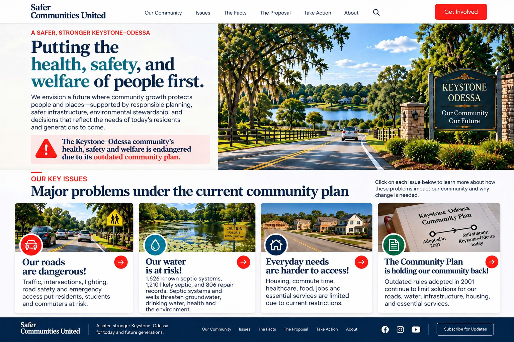
P017-01
P017-02
P017-03
P017-04
P017-05
- P017-01 — Hero — cảnh đường/cộng đồng với cổng Keystone–Odessa
CẦN TÌM ẢNH CHỤP THAY · Không giả cổng/biển tên địa phương; ưu tiên ảnh local có nguồn thật.
Section: H-01, H-06
- P017-02 — Issue card Roads — đường và traffic
CẦN TÌM ẢNH CHỤP THAY · Ảnh thật đường hai làn có cây, traffic; ưu tiên Keystone–Odessa/Gunn Highway nếu gắn tên địa điểm. Không dùng ảnh nơi khác rồi gọi là Gunn Highway.
Section: H-01, H-06
- P017-03 — Issue card Water — hồ/cảnh quan nước
CẦN TÌM ẢNH CHỤP THAY · Ảnh thật hồ/wetland; không coi hình đẹp là bằng chứng chất lượng nước hoặc wellfield thực tế.
Section: H-01, H-06
- P017-04 — Issue card Everyday Needs — nhà ở
CẦN TÌM ẢNH CHỤP THAY · Ảnh thật nhà ở Mỹ/Florida; ưu tiên địa phương. Không suy density/giá nhà từ ảnh minh họa.
Section: H-01, H-06
- P017-05 — Issue card Community Plan — ảnh bìa văn bản
LẤY PREVIEW TỪ TÀI LIỆU THẬT · Dùng preview đúng Community Plan/Livable Communities thật; không tìm stock giả cover.
Section: H-01, H-06
PDF 19 — Issues - Roads overview
Mở file gốc không overlay · 1476 × 984
- P019-01 — Ảnh đường và pedestrian bên dưới heading Roads
CẦN TÌM ẢNH CHỤP THAY · Ảnh thật đường hai làn có cây, traffic; ưu tiên Keystone–Odessa/Gunn Highway nếu gắn tên địa điểm. Không dùng ảnh nơi khác rồi gọi là Gunn Highway.
Section: I-01, I-02
PDF 21 — Issues - Water overview
Mở file gốc không overlay · 1476 × 1250
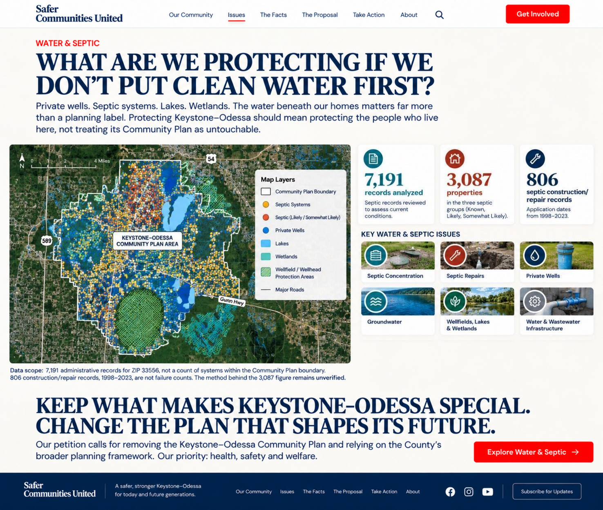
P021-01
P021-02
P021-03
P021-04
P021-05
P021-06
P021-07
- P021-01 — Map septic/wells/boundary bên trái
GIỮ — MAP CHƯA RÕ PROVENANCE · Không phải một trong ba map file độc lập; giữ nguyên, chưa xác minh GIS provenance; không thay bằng ảnh stock.
Section: I-03
- P021-02 — Septic Concentration
CẦN TÌM ẢNH CHỤP THAY · Ảnh thật septic lid/tank đúng thiết bị; không ảnh cống hoặc bể khác bị gọi là septic.
Section: I-03
- P021-03 — Septic Repairs
CẦN TÌM ẢNH CHỤP THAY · Ảnh thật thi công/sửa septic; không mô tả là một hồ sơ sửa chữa địa phương cụ thể khi chưa có nguồn.
Section: I-03
- P021-04 — Private Wells
CẦN TÌM ẢNH CHỤP THAY · Ảnh thật wellhead/pump phù hợp nhà ở Mỹ; không nhầm fire hydrant hoặc municipal valve thành private well.
Section: I-03
- P021-05 — Groundwater — thumbnail mặt nước
CẦN TÌM ẢNH CHỤP THAY · Ảnh thật hồ/wetland; không coi hình đẹp là bằng chứng chất lượng nước hoặc wellfield thực tế.
Section: I-03
- P021-06 — Wellfields, Lakes & Wetlands
CẦN TÌM ẢNH CHỤP THAY · Ảnh thật hồ/wetland; không coi hình đẹp là bằng chứng chất lượng nước hoặc wellfield thực tế.
Section: I-03
- P021-07 — Water & Wastewater Infrastructure
CẦN TÌM ẢNH CHỤP THAY · Ảnh thật hệ thống nước/van/bồn; chỉ gọi cơ sở địa phương khi xác minh được.
Section: I-03
PDF 23 — Issues - Everyday Needs
Mở file gốc không overlay · 1092 × 1440
- P023-01 — Schematic service-pin map
GIỮ MINH HỌA ĐƯỢC CHỈ ĐỊNH · Blueprint chỉ định illustration và not verified locations; không đổi thành bản đồ dịch vụ mới.
Section: I-04
PDF 25 — Issues - Outdated Community Plan
Mở file gốc không overlay · 1672 × 941
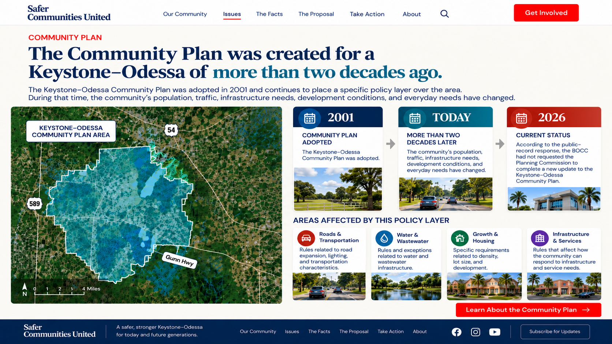
P025-01
P025-02
P025-03
P025-04
P025-05
P025-06
P025-07
P025-08
- P025-01 — Boundary map bên trái
GIỮ — MAP CHƯA RÕ PROVENANCE · Giữ nguyên/chờ nguồn; không tự thay bằng stock.
Section: I-05
- P025-02 — Timeline 2001 — countryside
CẦN TÌM ẢNH CHỤP THAY · Ảnh thật Florida phù hợp rural character; chỉ ghi đúng địa điểm và thời gian đã biết, không giả cảnh năm 2001.
Section: I-05
- P025-03 — Timeline TODAY — traffic
CẦN TÌM ẢNH CHỤP THAY · Ảnh thật đường hai làn có cây, traffic; ưu tiên Keystone–Odessa/Gunn Highway nếu gắn tên địa điểm. Không dùng ảnh nơi khác rồi gọi là Gunn Highway.
Section: I-05
- P025-04 — Timeline 2026 — tòa nhà civic
CẦN TÌM ẢNH CHỤP THAY · Nếu biểu đạt cơ quan cụ thể, dùng ảnh đúng cơ quan có nguồn. Ảnh office chung chỉ là minh họa, không giả là Planning Commission headquarters.
Section: I-05
- P025-05 — Policy area Roads — thumbnail
CẦN TÌM ẢNH CHỤP THAY · Ảnh thật đường hai làn có cây, traffic; ưu tiên Keystone–Odessa/Gunn Highway nếu gắn tên địa điểm. Không dùng ảnh nơi khác rồi gọi là Gunn Highway.
Section: I-05
- P025-06 — Policy area Water — thumbnail
CẦN TÌM ẢNH CHỤP THAY · Ảnh thật hồ/wetland; không coi hình đẹp là bằng chứng chất lượng nước hoặc wellfield thực tế.
Section: I-05
- P025-07 — Policy area Housing — thumbnail
CẦN TÌM ẢNH CHỤP THAY · Ảnh thật nhà ở Mỹ/Florida; ưu tiên địa phương. Không suy density/giá nhà từ ảnh minh họa.
Section: I-05
- P025-08 — Policy area Services — thumbnail
CẦN TÌM ẢNH CHỤP THAY · Ảnh thật khu dịch vụ/retail; không tự gắn địa chỉ hoặc khẳng định cơ sở nằm trong/outside Plan boundary.
Section: I-05
PDF 27 — Issues - Connections diagram
Mở file gốc không overlay · 1355 × 1161
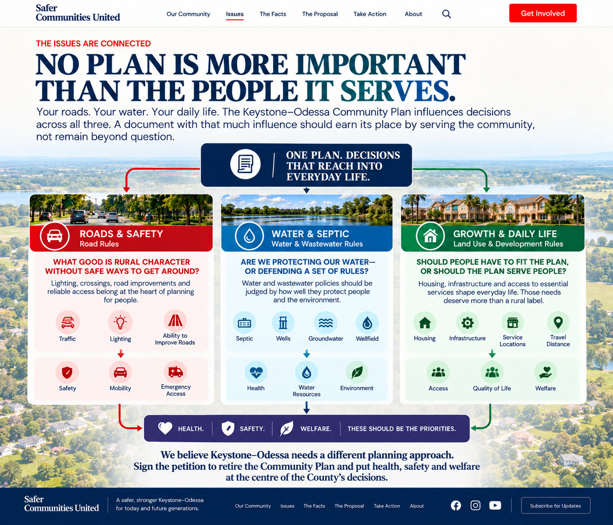
P027-01
P027-02
P027-03
P027-04
- P027-01 — Background aerial nằm sau toàn bộ connection diagram
CHƯA THAY — ẢNH GẮN MAP/DIAGRAM · Có thể cần ảnh nền khác sau này, nhưng không thay cả composite và không làm mất arrows/labels/diagram được duyệt.
Section: I-06
- P027-02 — Dải photo Roads ở đầu cột 1
CẦN TÌM ẢNH CHỤP THAY · Ảnh thật đường hai làn có cây, traffic; ưu tiên Keystone–Odessa/Gunn Highway nếu gắn tên địa điểm. Không dùng ảnh nơi khác rồi gọi là Gunn Highway.
Section: I-06
- P027-03 — Dải photo Water ở đầu cột 2
CẦN TÌM ẢNH CHỤP THAY · Ảnh thật hồ/wetland; không coi hình đẹp là bằng chứng chất lượng nước hoặc wellfield thực tế.
Section: I-06
- P027-04 — Dải photo Housing ở đầu cột 3
CẦN TÌM ẢNH CHỤP THAY · Ảnh thật nhà ở Mỹ/Florida; ưu tiên địa phương. Không suy density/giá nhà từ ảnh minh họa.
Section: I-06
PDF 30 — Roads - Street Lighting
Mở file gốc không overlay · 1476 × 984
- P030-01 — Ảnh đường ban đêm góc trên phải
CẦN TÌM ẢNH CHỤP THAY · Ảnh thật đường hai làn ban đêm; không bịa vị trí, vụ tai nạn hoặc chứng minh tình trạng local street lighting bằng ảnh không rõ nguồn.
Section: R-02
PDF 31 — Roads - Gunn Highway
Mở file gốc không overlay · 1476 × 984
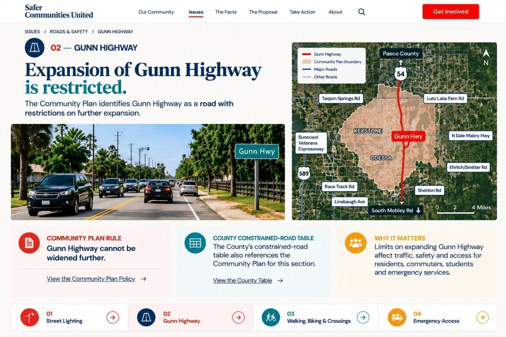
P031-01
P031-02
- P031-01 — Ảnh road/traffic dưới heading Gunn Highway
CẦN TÌM ẢNH CHỤP THAY · Ảnh thật đường hai làn có cây, traffic; ưu tiên Keystone–Odessa/Gunn Highway nếu gắn tên địa điểm. Không dùng ảnh nơi khác rồi gọi là Gunn Highway.
Section: R-03
- P031-02 — Gunn Highway route map bên phải
GIỮ — MAP CHƯA RÕ PROVENANCE · Giữ nguyên/chờ nguồn; không tự thay bằng stock.
Section: R-03
PDF 32 — Roads - Walking, Biking and Crossings
Mở file gốc không overlay · 1476 × 984
- P032-01 — Pedestrian/cyclist trên lề đường
CẦN TÌM ẢNH CHỤP THAY · Ảnh thật pedestrian/cyclist/crossing phù hợp ngữ cảnh Mỹ; không dùng hình một nơi khác như khảo sát hiện trạng Gunn Highway.
Section: R-04
PDF 33 — Roads - Emergency Access
Mở file gốc không overlay · 1476 × 984
- P033-01 — Fire engine/EMS trên đường
CẦN TÌM ẢNH CHỤP THAY · Ảnh thật xe cứu hộ/cứu thương Mỹ; không trình bày như incident hoặc response delay đã ghi nhận tại Keystone–Odessa.
Section: R-05
PDF 39 — Roads - Records and Evidence
Mở file gốc không overlay · 1536 × 1024
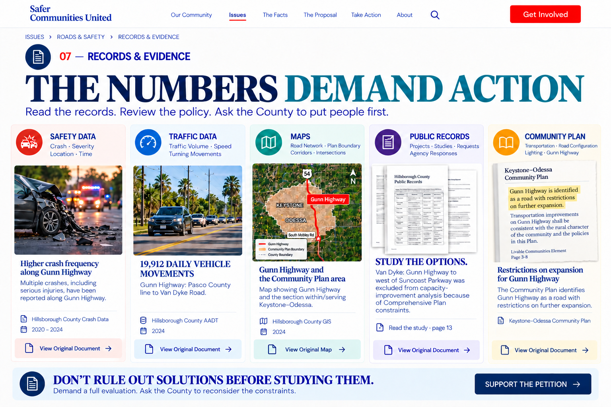
P039-01
P039-02
P039-03
P039-04
P039-05
- P039-01 — Safety Data — ảnh collision
CẦN TÌM ẢNH CHỤP THAY · Ảnh thật có thể dùng minh họa, ưu tiên không đồ họa thương tích; phải tránh ám chỉ đây là một vụ tai nạn địa phương có trong dataset khi chưa có nguồn.
Section: R-07
- P039-02 — Traffic Data — ảnh xe cộ
CẦN TÌM ẢNH CHỤP THAY · Ảnh thật đường hai làn có cây, traffic; ưu tiên Keystone–Odessa/Gunn Highway nếu gắn tên địa điểm. Không dùng ảnh nơi khác rồi gọi là Gunn Highway.
Section: R-07
- P039-03 — Maps card — Gunn Highway/boundary map
GIỮ — MAP CHƯA RÕ PROVENANCE · Giữ nguyên/chờ nguồn; không tự thay bằng stock.
Section: R-07
- P039-04 — Public Records — thumbnail hồ sơ
LẤY PREVIEW TỪ TÀI LIỆU THẬT · Cần đúng Van Dyke study/public record, không mock official paperwork.
Section: R-07
- P039-05 — Community Plan — thumbnail trang trích policy
LẤY PREVIEW TỪ TÀI LIỆU THẬT · Lấy trang thật đúng nguồn/policy; chữ trong mock thumbnail không tự là trích dẫn đã xác minh.
Section: R-07
PDF 41 — Roads - Planning comparison summary
Mở file gốc không overlay · 1476 × 984
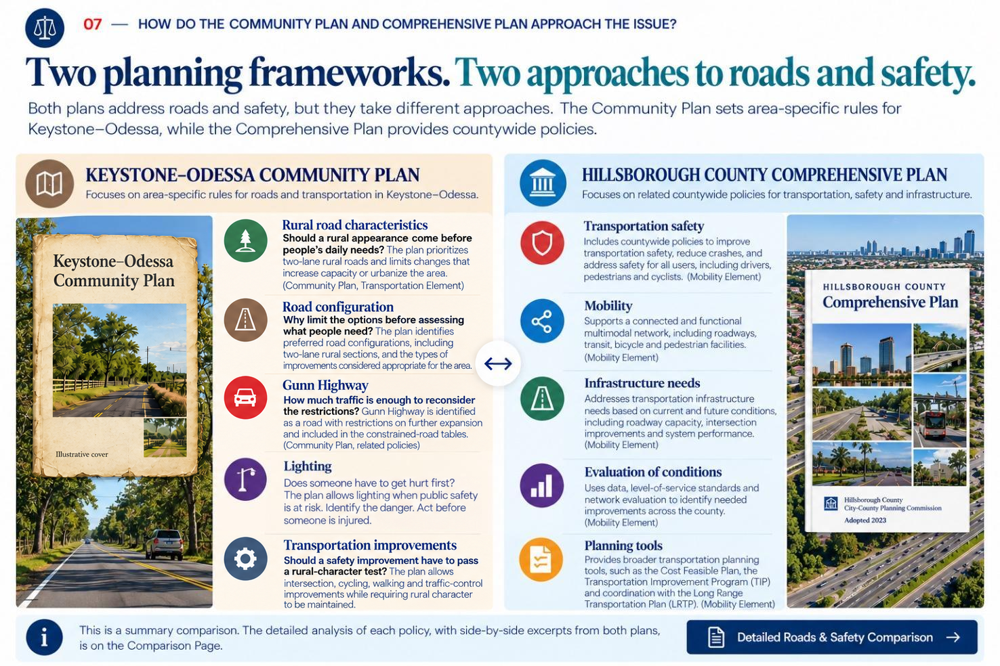
P041-01
P041-02
P041-03
P041-04
- P041-01 — Ảnh road làm nền sau Community Plan cover
CẦN TÌM ẢNH CHỤP THAY · Ảnh thật đường hai làn có cây, traffic; ưu tiên Keystone–Odessa/Gunn Highway nếu gắn tên địa điểm. Không dùng ảnh nơi khác rồi gọi là Gunn Highway.
Section: R-08
- P041-02 — Ảnh city/highway aerial sau County cover
CẦN TÌM ẢNH CHỤP THAY · Ảnh thật Tampa/Hillsborough nếu ghi tên; không bịa skyline/đường giao thông từ mock cover.
Section: R-08
- P041-03 — Community Plan illustrative cover
LẤY PREVIEW TỪ TÀI LIỆU THẬT · Đây là illustrative cover trong mockup, không coi là cover pháp lý gốc.
Section: R-08
- P041-04 — County Comprehensive Plan cover/collage
LẤY PREVIEW TỪ TÀI LIỆU THẬT · Lấy preview từ bản County Plan thật; không tìm riêng các ảnh trang trí bên trong fake cover.
Section: R-08
PDF 43 — Water - Hero
Mở file gốc không overlay · 1336 × 890
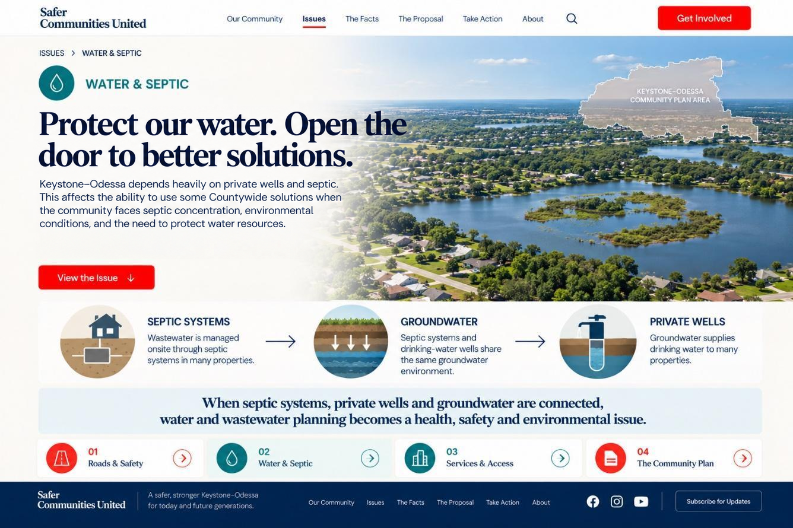
P043-01
P043-02
- P043-01 — Hero aerial có Community Plan boundary overlay
CHƯA THAY — ẢNH GẮN MAP/DIAGRAM · Không thay background bằng một hồ ngẫu nhiên rồi giữ boundary overlay. Cần ảnh nền và overlay gốc có quan hệ địa lý đúng.
Section: W-01
- P043-02 — Ba sơ đồ Septic → Groundwater → Wells
GIỮ MINH HỌA ĐƯỢC CHỈ ĐỊNH · Minh họa kỹ thuật, không nằm trong danh sách stock photo.
Section: W-01
PDF 44 — Water - Septic scale
Mở file gốc không overlay · 1402 × 935
- P044-01 — Septic classification map
GIỮ — MAP CHƯA RÕ PROVENANCE · Giữ nguyên/chờ nguồn; không tự thay bằng stock.
Section: W-02
PDF 45 — Water - Repair records
Mở file gốc không overlay · 1476 × 984
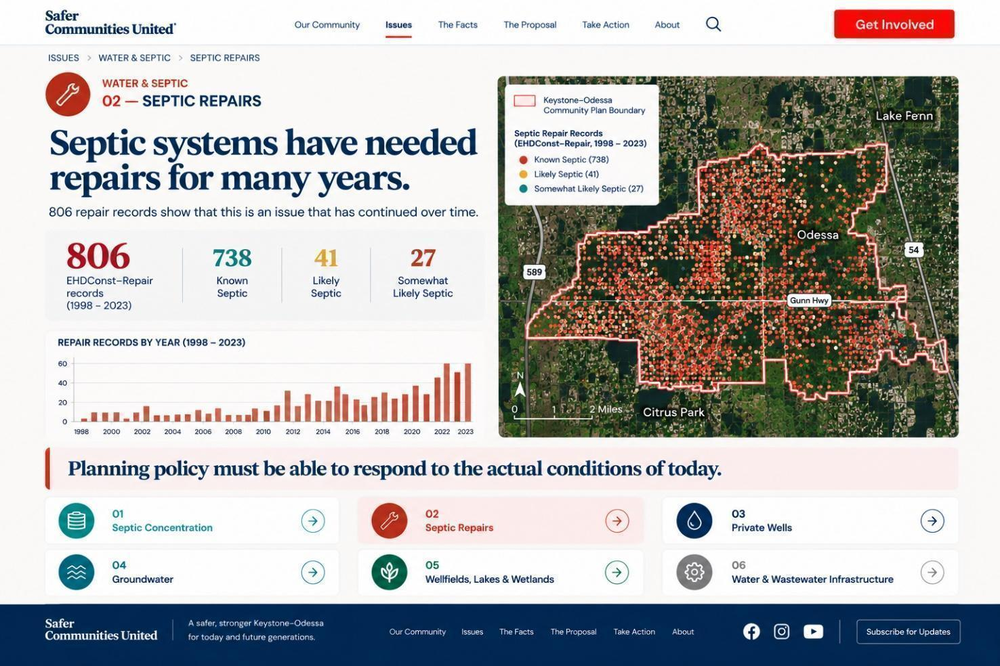
P045-01
P045-02
- P045-01 — Repair records map
GIỮ — MAP CHƯA RÕ PROVENANCE · Giữ nguyên/chờ nguồn; không tự thay bằng stock.
Section: W-03
- P045-02 — Repair timeline/chart
GIỮ — MAP CHƯA RÕ PROVENANCE · Data visual: không sửa bar heights, year labels hoặc tìm chart khác thay. Cần raw data nếu muốn xác minh.
Section: W-03
PDF 47 — Water - Connected-water conceptual cutaway
Mở file gốc không overlay · 1341 × 1173
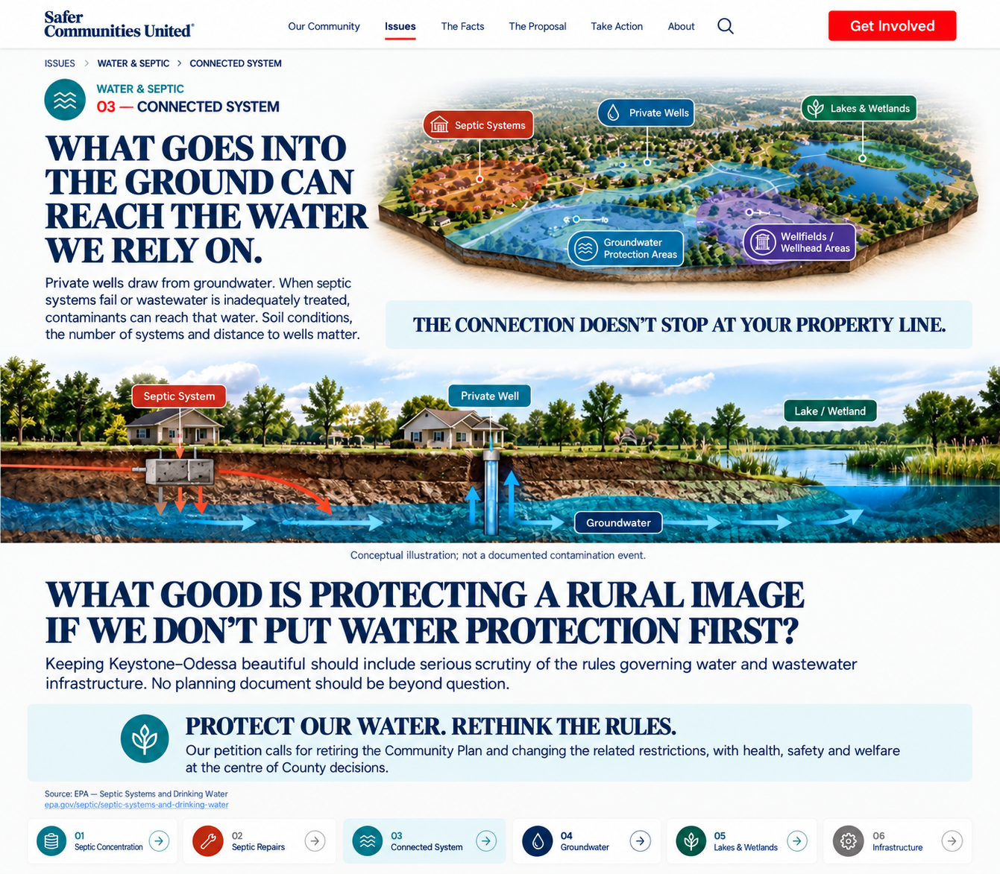
P047-01
P047-02
- P047-01 — Connected-water 3D cutaway ở trên
GIỮ MINH HỌA ĐƯỢC CHỈ ĐỊNH · Selected conceptual illustration; giữ đúng bản, không regenerate.
Section: W-04
- P047-02 — Groundwater cross-section giữa trang
GIỮ MINH HỌA ĐƯỢC CHỈ ĐỊNH · Giữ conceptual/not contamination event caveat; không thay bằng ảnh ô nhiễm thực tế.
Section: W-04
PDF 49 — Water - Water and Wastewater Options
Mở file gốc không overlay · 1448 × 1086
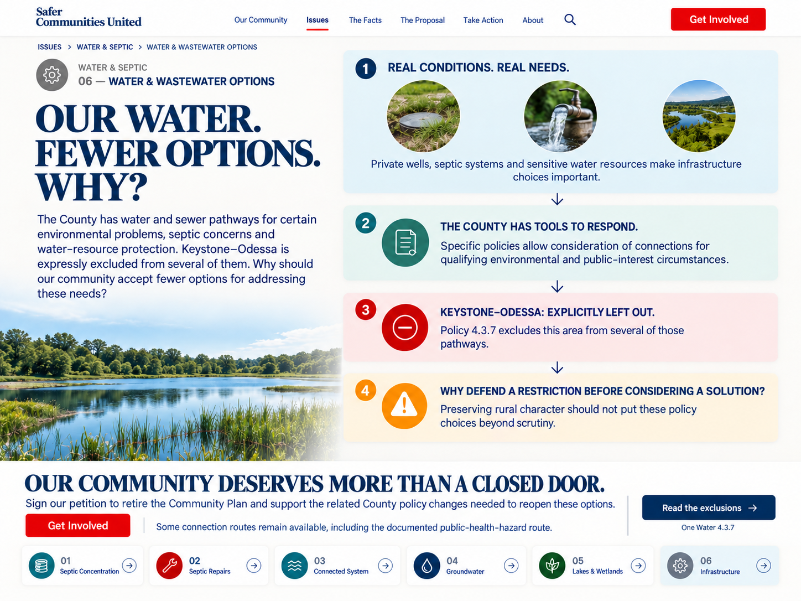
P049-01
P049-02
P049-03
P049-04
- P049-01 — Ảnh hồ lớn bên trái
CẦN TÌM ẢNH CHỤP THAY · Ảnh thật hồ/wetland; không coi hình đẹp là bằng chứng chất lượng nước hoặc wellfield thực tế.
Section: W-05
- P049-02 — Circle 1 — septic lid
CẦN TÌM ẢNH CHỤP THAY · Ảnh thật septic lid/tank đúng thiết bị; không ảnh cống hoặc bể khác bị gọi là septic.
Section: W-05
- P049-03 — Circle 2 — vòi/thiết bị cấp nước
CẦN TÌM ẢNH CHỤP THAY · Ảnh hiện tại giống faucet, không tự gọi là wellhead; chọn ảnh phù hợp copy thật.
Section: W-05
- P049-04 — Circle 3 — landscape nước
CẦN TÌM ẢNH CHỤP THAY · Ảnh thật hồ/wetland; không coi hình đẹp là bằng chứng chất lượng nước hoặc wellfield thực tế.
Section: W-05
PDF 51 — Water - Core Conflict concise panel
Mở file gốc không overlay · 1536 × 1024
- P051-01 — Dải ảnh hồ/cây dưới LEFT OUT. BY CHOICE.
CẦN TÌM ẢNH CHỤP THAY · Ảnh thật hồ/wetland; không coi hình đẹp là bằng chứng chất lượng nước hoặc wellfield thực tế.
Section: W-06
PDF 52 — Water - Comparison summary
Mở file gốc không overlay · 1476 × 984
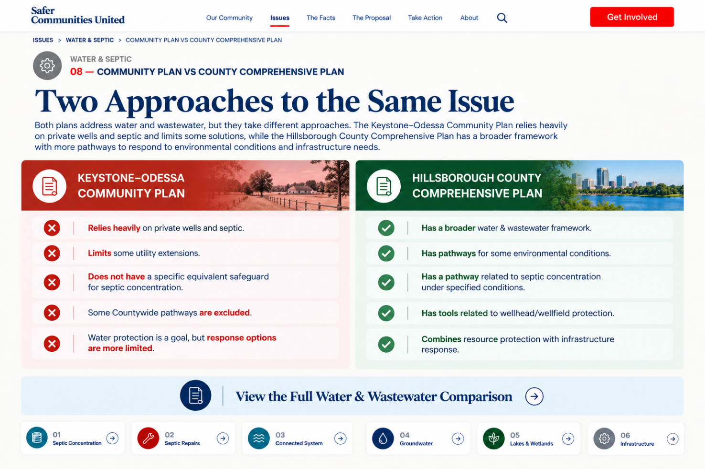
P052-01
P052-02
- P052-01 — Banner photo Community Plan — rural road
CẦN TÌM ẢNH CHỤP THAY · Ảnh thật Florida phù hợp rural character; chỉ ghi đúng địa điểm và thời gian đã biết, không giả cảnh năm 2001.
Section: W-07
- P052-02 — Banner photo County Plan — city
CẦN TÌM ẢNH CHỤP THAY · Ảnh thật Tampa/Hillsborough nếu ghi tên; không bịa skyline/đường giao thông từ mock cover.
Section: W-07
PDF 53 — Water - Evidence and Next Issue
Mở file gốc không overlay · 1476 × 984
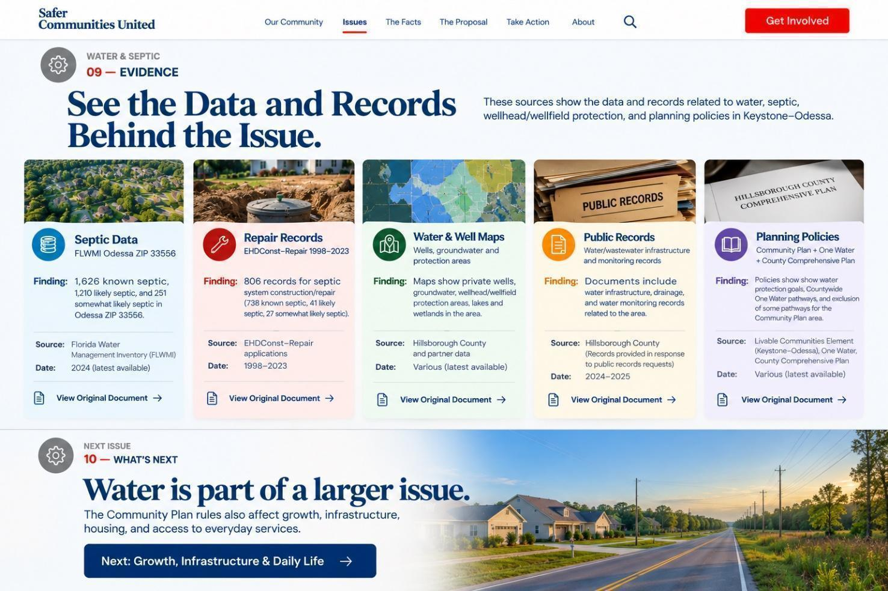
P053-01
P053-02
P053-03
P053-04
P053-05
P053-06
- P053-01 — Septic Data — aerial neighborhood thumbnail
CẦN TÌM ẢNH CHỤP THAY · Ảnh hàng không có nguồn địa điểm rõ; chỉ làm hình minh họa, không thay satellite map/ranh/heatmap hoặc tạo then/today từ hai nơi khác nhau.
Section: W-08, W-09
- P053-02 — Repair Records — excavation thumbnail
CẦN TÌM ẢNH CHỤP THAY · Ảnh thật thi công/sửa septic; không mô tả là một hồ sơ sửa chữa địa phương cụ thể khi chưa có nguồn.
Section: W-08, W-09
- P053-03 — Water & Well Maps thumbnail
GIỮ — MAP CHƯA RÕ PROVENANCE · Giữ nguyên/chờ nguồn; không tự thay bằng stock.
Section: W-08, W-09
- P053-04 — Public Records folder thumbnail
LẤY PREVIEW TỪ TÀI LIỆU THẬT · Ưu tiên preview đúng hồ sơ; nếu chỉ folder trang trí thì không gắn nó như original record.
Section: W-08, W-09
- P053-05 — Planning Policies document thumbnail
LẤY PREVIEW TỪ TÀI LIỆU THẬT · Giữ nguyên/chờ nguồn; không tự thay bằng stock.
Section: W-08, W-09
- P053-06 — Next issue — ảnh đường/nhà ở
CẦN TÌM ẢNH CHỤP THAY · Ảnh thật nhà ở Mỹ/Florida; ưu tiên địa phương. Không suy density/giá nhà từ ảnh minh họa.
Section: W-08, W-09
PDF 55 — Growth - Then and Today
Mở file gốc không overlay · 1476 × 984
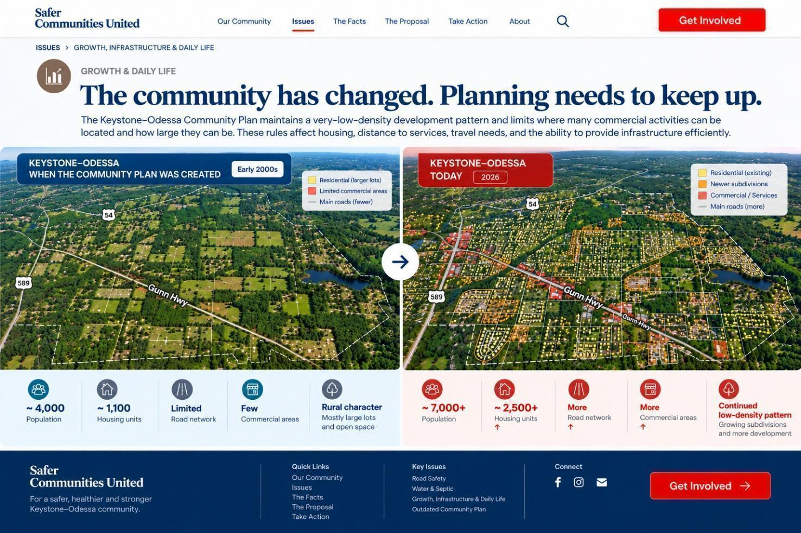
P055-01
P055-02
- P055-01 — Then map/aerial với layers và số liệu Early 2000s
CHƯA THAY — ẢNH GẮN MAP/DIAGRAM · Không tìm ảnh countryside bất kỳ làm before; có map layers/legend và mốc thời gian, giữ nguyên/chờ provenance.
Section: L-01
- P055-02 — Today map/aerial với layers và số liệu 2026
CHƯA THAY — ẢNH GẮN MAP/DIAGRAM · Không thay ảnh today độc lập làm sai phép so sánh địa lý/thời gian.
Section: L-01
PDF 57 — Growth - Natural Rural Density Comparison
Mở file gốc không overlay · 1536 × 1024
- P057-01 — Natural Rural Density Comparison — hai panel và labels
GIỮ MINH HỌA ĐƯỢC CHỈ ĐỊNH · Blueprint chọn riêng; giữ cả hai phía/labels/trees/rural lanes. Không tìm hai stock photos để thay mô hình mật độ.
Section: L-02, L-03
PDF 58 — Growth - Service map illustration
Mở file gốc không overlay · 1476 × 984
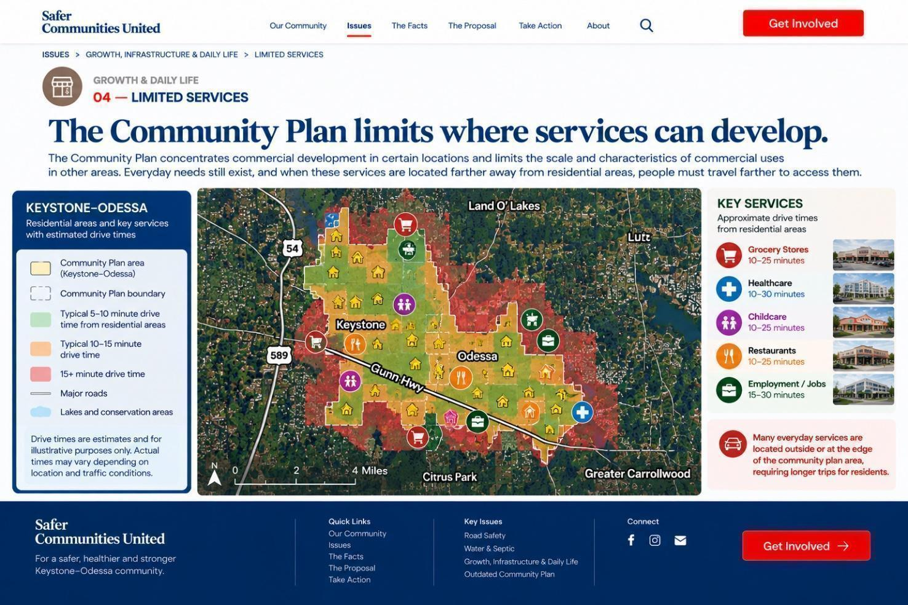
P058-01
P058-02
P058-03
P058-04
P058-05
P058-06
- P058-01 — Service map/legend/heatmap/pins
GIỮ — MAP CHƯA RÕ PROVENANCE · Đã ghi minh họa travel times; không thay map bằng ảnh satellite/route mới.
Section: L-04
- P058-02 — Grocery Stores thumbnail
CẦN TÌM ẢNH CHỤP THAY · Ảnh thật supermarket ở Mỹ; không ám chỉ là pin/địa chỉ/thời gian di chuyển đã được xác minh.
Section: L-04
- P058-03 — Healthcare thumbnail
CẦN TÌM ẢNH CHỤP THAY · Ảnh thật cơ sở y tế Mỹ; không dùng làm bằng chứng denied care hoặc thời gian tiếp cận đã đo.
Section: L-04
- P058-04 — Childcare thumbnail
CẦN TÌM ẢNH CHỤP THAY · Ảnh thật cơ sở childcare phù hợp Mỹ; có thể chọn mặt ngoài, không cần thêm ảnh trẻ em/nhân vật vào nội dung.
Section: L-04
- P058-05 — Restaurants thumbnail
CẦN TÌM ẢNH CHỤP THAY · Ảnh thật nhà hàng/retail phù hợp Mỹ; địa điểm/drive-time vẫn chỉ theo caveat của blueprint.
Section: L-04
- P058-06 — Employment/Jobs thumbnail
CẦN TÌM ẢNH CHỤP THAY · Ảnh thật văn phòng/doanh nghiệp; không suy ra số việc làm hoặc vị trí cơ sở từ ảnh.
Section: L-04
PDF 59 — Growth - Comparison summary
Mở file gốc không overlay · 1476 × 984
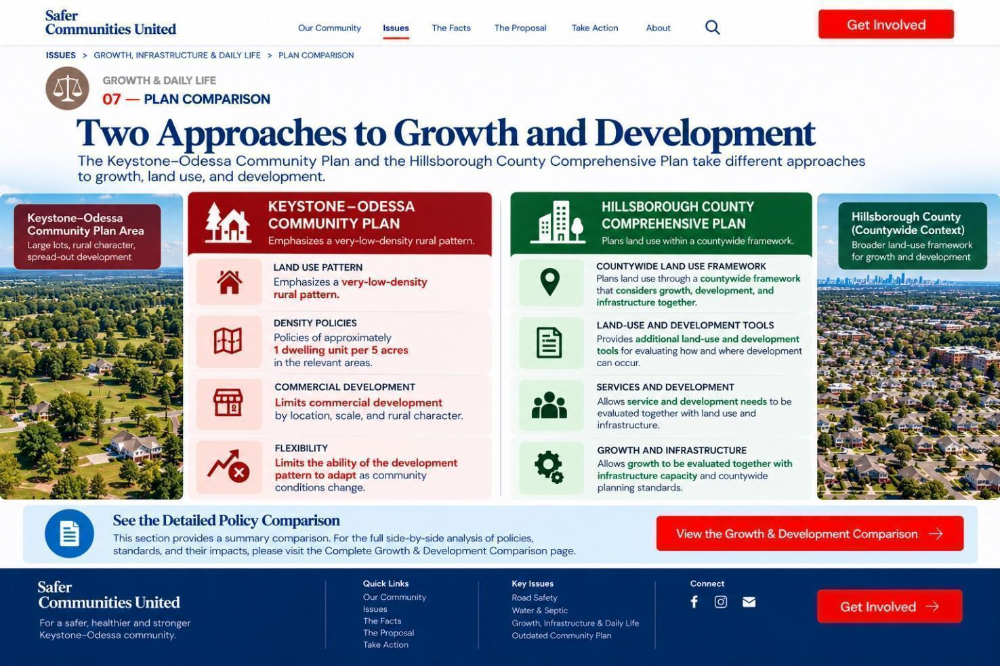
P059-01
P059-02
- P059-01 — Cột trái — ảnh landscape/housing dài
CẦN TÌM ẢNH CHỤP THAY · Ảnh thật Florida phù hợp rural character; chỉ ghi đúng địa điểm và thời gian đã biết, không giả cảnh năm 2001.
Section: L-06
- P059-02 — Cột phải — ảnh residential aerial dài
CẦN TÌM ẢNH CHỤP THAY · Ảnh hàng không có nguồn địa điểm rõ; chỉ làm hình minh họa, không thay satellite map/ranh/heatmap hoặc tạo then/today từ hai nơi khác nhau.
Section: L-06
PDF 60 — Growth - Evidence and Outdated Plan continuation
Mở file gốc không overlay · 1476 × 984
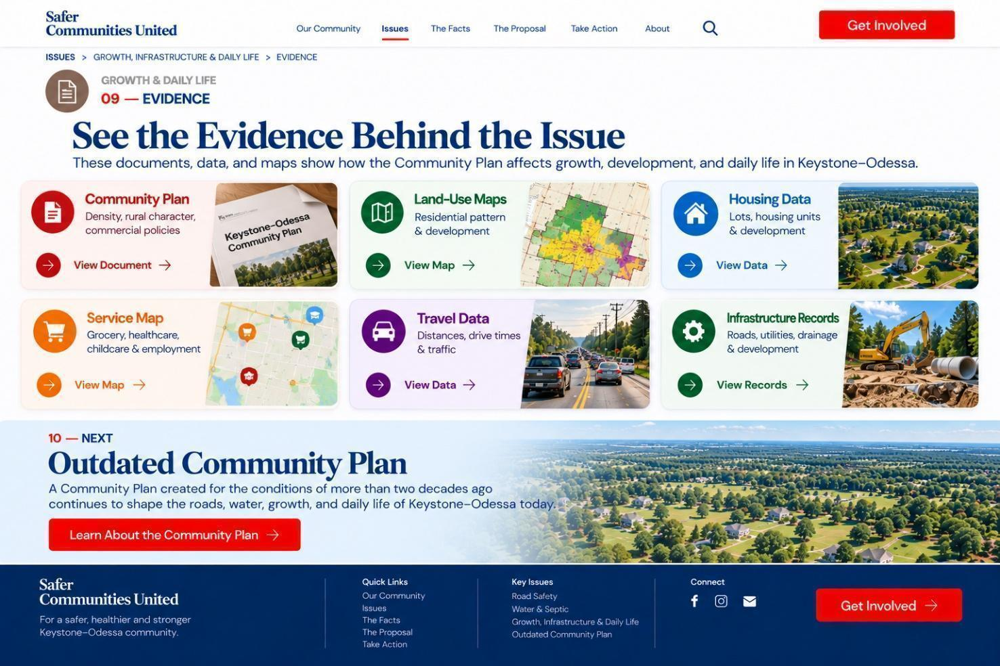
P060-01
P060-02
P060-03
P060-04
P060-05
P060-06
P060-07
- P060-01 — Community Plan card — document cover
LẤY PREVIEW TỪ TÀI LIỆU THẬT · Giữ nguyên/chờ nguồn; không tự thay bằng stock.
Section: L-07, L-08
- P060-02 — Land-Use Maps thumbnail
GIỮ — MAP CHƯA RÕ PROVENANCE · Giữ nguyên/chờ nguồn; không tự thay bằng stock.
Section: L-07, L-08
- P060-03 — Housing Data — aerial photo
CẦN TÌM ẢNH CHỤP THAY · Ảnh hàng không có nguồn địa điểm rõ; chỉ làm hình minh họa, không thay satellite map/ranh/heatmap hoặc tạo then/today từ hai nơi khác nhau.
Section: L-07, L-08
- P060-04 — Service Map thumbnail
GIỮ — MAP CHƯA RÕ PROVENANCE · Giữ nguyên/chờ nguồn; không tự thay bằng stock.
Section: L-07, L-08
- P060-05 — Travel Data — traffic photo
CẦN TÌM ẢNH CHỤP THAY · Ảnh thật đường hai làn có cây, traffic; ưu tiên Keystone–Odessa/Gunn Highway nếu gắn tên địa điểm. Không dùng ảnh nơi khác rồi gọi là Gunn Highway.
Section: L-07, L-08
- P060-06 — Infrastructure Records — construction photo
CẦN TÌM ẢNH CHỤP THAY · Ảnh thật construction, wood framing hoặc utility work đúng ngữ cảnh; không gọi là dự án cụ thể nếu chưa có nguồn.
Section: L-07, L-08
- P060-07 — Outdated Plan continuation — rural aerial
CẦN TÌM ẢNH CHỤP THAY · Ảnh hàng không có nguồn địa điểm rõ; chỉ làm hình minh họa, không thay satellite map/ranh/heatmap hoặc tạo then/today từ hai nơi khác nhau.
Section: L-07, L-08
PDF 63 — Comparison - Roads and Safety
Mở file gốc không overlay · 1070 × 1470
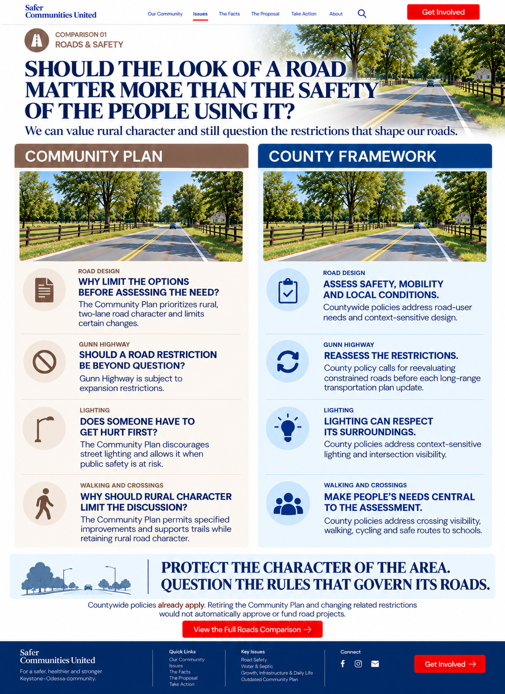
P063-01
P063-02
P063-03
- P063-01 — Roads comparison header — road photo góc phải
CẦN TÌM ẢNH CHỤP THAY · Ảnh thật đường hai làn có cây, traffic; ưu tiên Keystone–Odessa/Gunn Highway nếu gắn tên địa điểm. Không dùng ảnh nơi khác rồi gọi là Gunn Highway.
Section: C-01
- P063-02 — Community Plan column — road strip
CẦN TÌM ẢNH CHỤP THAY · Ảnh thật đường hai làn có cây, traffic; ưu tiên Keystone–Odessa/Gunn Highway nếu gắn tên địa điểm. Không dùng ảnh nơi khác rồi gọi là Gunn Highway.
Section: C-01
- P063-03 — County Framework column — road strip
CẦN TÌM ẢNH CHỤP THAY · Có thể tái dùng cùng ảnh thật cho hai cột để tránh so sánh sai hai địa điểm.
Section: C-01
PDF 65 — Comparison - Water and Wastewater
Mở file gốc không overlay · 1536 × 1024
- P065-01 — Water comparison header — hồ và bồn nước
CẦN TÌM ẢNH CHỤP THAY · Ảnh thật hệ thống nước/van/bồn; chỉ gọi cơ sở địa phương khi xác minh được.
Section: C-02
PDF 67 — Comparison - Growth and Housing - Screenshot 110
Mở file gốc không overlay · 1536 × 1024
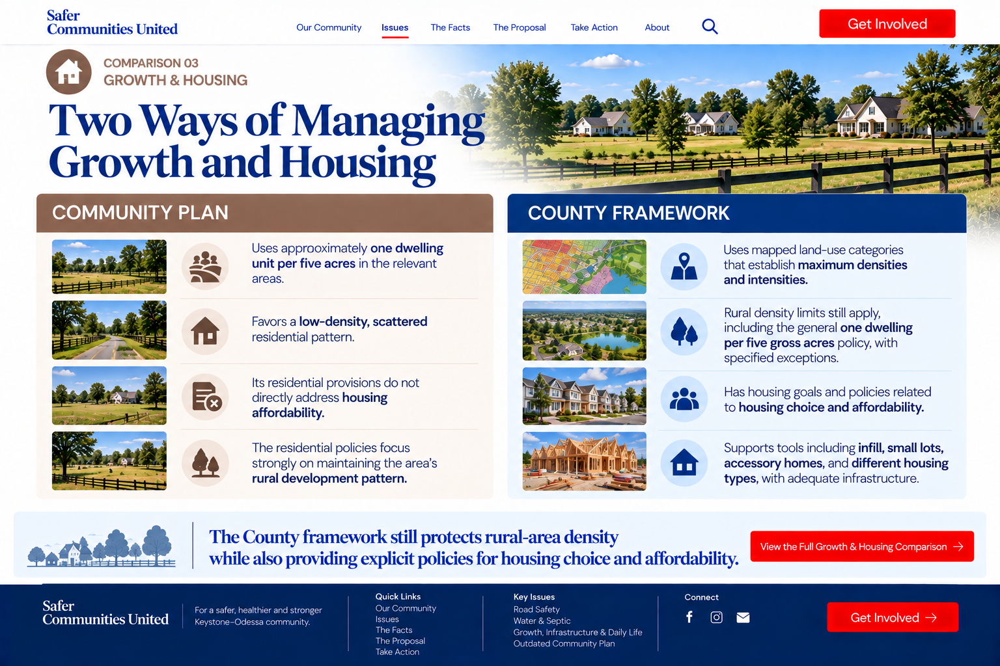
P067-01
P067-02
P067-03
P067-04
P067-05
P067-06
P067-07
P067-08
P067-09
- P067-01 — Screenshot 110 — rural landscape header
CẦN TÌM ẢNH CHỤP THAY · Giữ composition Screenshot 110, chỉ thay ảnh chụp trang trí.
Section: C-03
- P067-02 — Community Plan row 1 — pasture/fence
CẦN TÌM ẢNH CHỤP THAY · Ảnh thật Florida phù hợp rural character; chỉ ghi đúng địa điểm và thời gian đã biết, không giả cảnh năm 2001.
Section: C-03
- P067-03 — Community Plan row 2 — narrow rural lane
CẦN TÌM ẢNH CHỤP THAY · Ảnh thật Florida phù hợp rural character; chỉ ghi đúng địa điểm và thời gian đã biết, không giả cảnh năm 2001.
Section: C-03
- P067-04 — Community Plan row 3 — farmhouse
CẦN TÌM ẢNH CHỤP THAY · Ảnh thật nhà ở Mỹ/Florida; ưu tiên địa phương. Không suy density/giá nhà từ ảnh minh họa.
Section: C-03
- P067-05 — Community Plan row 4 — countryside
CẦN TÌM ẢNH CHỤP THAY · Ảnh thật Florida phù hợp rural character; chỉ ghi đúng địa điểm và thời gian đã biết, không giả cảnh năm 2001.
Section: C-03
- P067-06 — County row 2 — residential aerial
CẦN TÌM ẢNH CHỤP THAY · Ảnh hàng không có nguồn địa điểm rõ; chỉ làm hình minh họa, không thay satellite map/ranh/heatmap hoặc tạo then/today từ hai nơi khác nhau.
Section: C-03
- P067-07 — County row 3 — townhomes
CẦN TÌM ẢNH CHỤP THAY · Ảnh thật nhiều kiểu nhà phù hợp Mỹ; không khẳng định loại nhà được tự động phê duyệt trong Keystone–Odessa.
Section: C-03
- P067-08 — County row 4 — wood-frame construction
CẦN TÌM ẢNH CHỤP THAY · Ảnh thật construction, wood framing hoặc utility work đúng ngữ cảnh; không gọi là dự án cụ thể nếu chưa có nguồn.
Section: C-03
- P067-09 — County row 1 — land-use map thumbnail
GIỮ — MAP CHƯA RÕ PROVENANCE · Map không thuộc nhóm photo được thay; chưa xác nhận đây là official GIS map.
Section: C-03
PDF 68 — Comparison - What Remains
Mở file gốc không overlay · 1536 × 1024
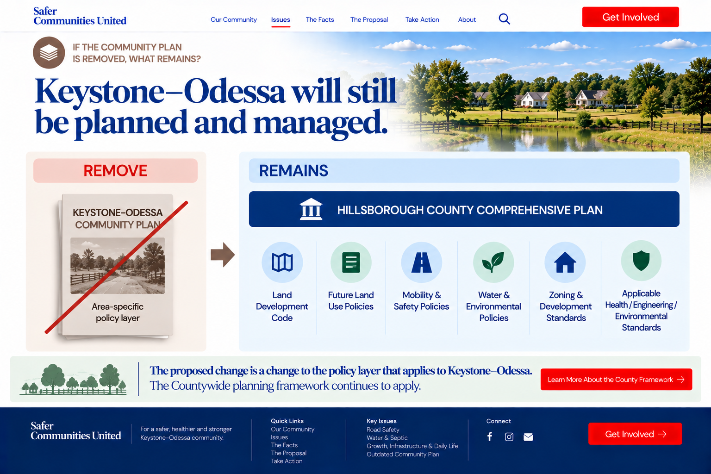
P068-01
P068-02
- P068-01 — What remains — rural lake/houses header
CẦN TÌM ẢNH CHỤP THAY · Ảnh thật Florida phù hợp rural character; chỉ ghi đúng địa điểm và thời gian đã biết, không giả cảnh năm 2001.
Section: C-04
- P068-02 — REMOVE — Community Plan cover
LẤY PREVIEW TỪ TÀI LIỆU THẬT · Giữ REMOVE diagram/strike-through logic bằng UI; preview tài liệu lấy từ file thật.
Section: C-04
PDF 70 — Evidence - Four issue groups
Mở file gốc không overlay · 1536 × 1024
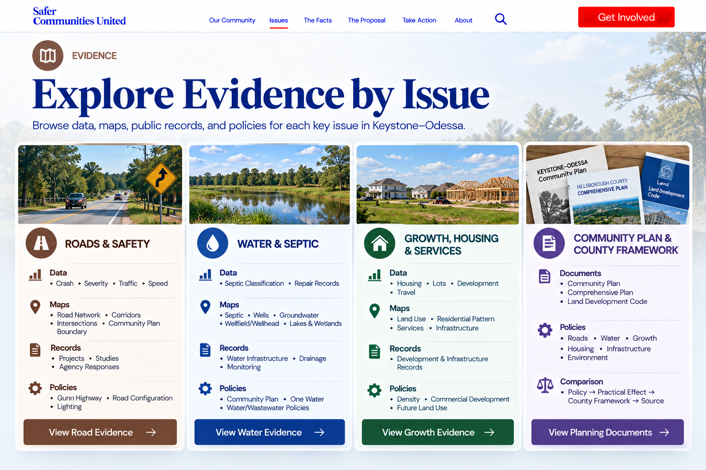
P070-01
P070-02
P070-03
P070-04
P070-05
- P070-01 — Evidence header — light landscape background
CẦN TÌM ẢNH CHỤP THAY · Ảnh thật Florida phù hợp rural character; chỉ ghi đúng địa điểm và thời gian đã biết, không giả cảnh năm 2001.
Section: F-01
- P070-02 — Road Evidence — road photo
CẦN TÌM ẢNH CHỤP THAY · Ảnh thật đường hai làn có cây, traffic; ưu tiên Keystone–Odessa/Gunn Highway nếu gắn tên địa điểm. Không dùng ảnh nơi khác rồi gọi là Gunn Highway.
Section: F-01
- P070-03 — Water Evidence — lake photo
CẦN TÌM ẢNH CHỤP THAY · Ảnh thật hồ/wetland; không coi hình đẹp là bằng chứng chất lượng nước hoặc wellfield thực tế.
Section: F-01
- P070-04 — Growth Evidence — houses photo
CẦN TÌM ẢNH CHỤP THAY · Ảnh thật nhà ở Mỹ/Florida; ưu tiên địa phương. Không suy density/giá nhà từ ảnh minh họa.
Section: F-01
- P070-05 — Planning Documents — cover collage
LẤY PREVIEW TỪ TÀI LIỆU THẬT · Giữ nguyên/chờ nguồn; không tự thay bằng stock.
Section: F-01
PDF 72 — Evidence - Library static reference
Mở file gốc không overlay · 1536 × 1024
P072-01
P072-02
P072-03
P072-04
P072-05
P072-06
P072-07
- P072-01 — Library heading — faded trees/landscape
CẦN TÌM ẢNH CHỤP THAY · Ảnh thật Florida phù hợp rural character; chỉ ghi đúng địa điểm và thời gian đã biết, không giả cảnh năm 2001.
Section: F-02
- P072-02 — Library row 1 — Livable Communities cover
LẤY PREVIEW TỪ TÀI LIỆU THẬT · Giữ nguyên/chờ nguồn; không tự thay bằng stock.
Section: F-02
- P072-03 — Library row 2 — agency response thumbnail
LẤY PREVIEW TỪ TÀI LIỆU THẬT · Lấy preview đúng September 23, 2026 response nếu được cung cấp, không dùng mock letterhead.
Section: F-02
- P072-04 — Library row 3 — water landscape thumbnail
CẦN TÌM ẢNH CHỤP THAY · Ảnh thật hồ/wetland; không coi hình đẹp là bằng chứng chất lượng nước hoặc wellfield thực tế.
Section: F-02
- P072-05 — Library row 4 — septic repair photo
CẦN TÌM ẢNH CHỤP THAY · Ảnh thật thi công/sửa septic; không mô tả là một hồ sơ sửa chữa địa phương cụ thể khi chưa có nguồn.
Section: F-02
- P072-06 — Library row 5 — septic classification map
GIỮ — MAP CHƯA RÕ PROVENANCE · Giữ nguyên/chờ nguồn; không tự thay bằng stock.
Section: F-02
- P072-07 — From Evidence to Action — countryside background
CẦN TÌM ẢNH CHỤP THAY · Ảnh thật Florida phù hợp rural character; chỉ ghi đúng địa điểm và thời gian đã biết, không giả cảnh năm 2001.
Section: F-02
PDF 74 — Action - Hero
Mở file gốc không overlay · 1672 × 941
- P074-01 — Action hero — family/community beside landscape
CẦN TÌM ẢNH CHỤP THAY · Không coi người trong ảnh mới là supporters thật.
Section: A-01
PDF 79 — Action - Three action cards
Mở file gốc không overlay · 1536 × 1024
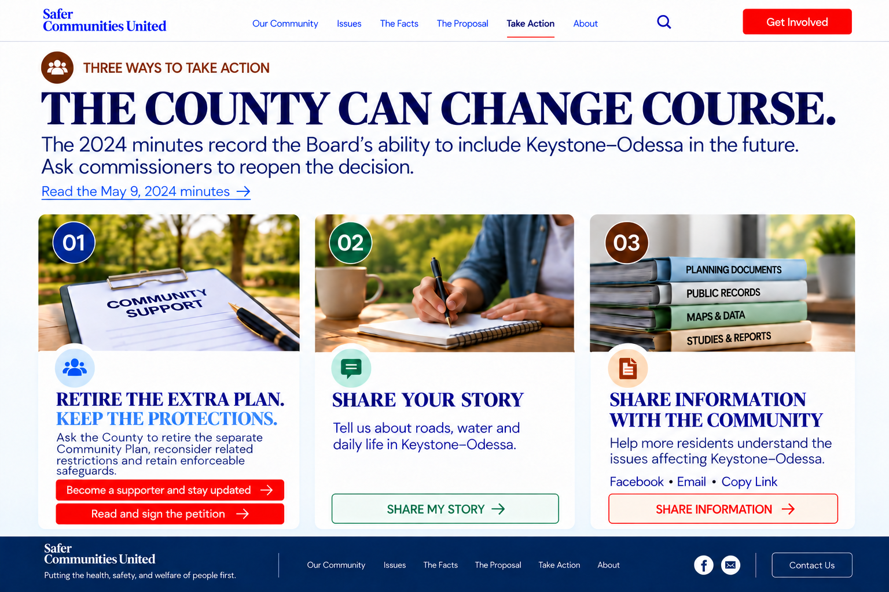
P079-01
P079-02
P079-03
- P079-01 — Add Support card — clipboard
CẦN TÌM ẢNH CHỤP THAY · Ảnh thật clipboard/pen/blank form làm minh họa; không chữ ký thật hoặc form được giả thành hồ sơ đã nộp.
Section: A-02
- P079-02 — Share Story card — writing in notebook
CẦN TÌM ẢNH CHỤP THAY · Ảnh thật bàn tay viết sổ, không nội dung cá nhân đọc được; không thêm lời chứng thật không có nguồn.
Section: A-02
- P079-03 — Share Information card — stack of folders
CẦN TÌM ẢNH CHỤP THAY · Đây là props minh họa, không phải public records cụ thể.
Section: A-02
PDF 80 — Action - Story form preview
Mở file gốc không overlay · 1536 × 1024
- P080-01 — Share Story — mailbox/rural street background
CẦN TÌM ẢNH CHỤP THAY · Giữ form/text là UI; không sao chép số 33556 trên mailbox như một địa chỉ xác minh.
Section: A-04
PDF 81 — Action - Sharing preview
Mở file gốc không overlay · 1536 × 1024
P081-01
- P081-01 — Laptop + miniature webpage + share choices
DỰNG UI — KHÔNG TÌM ẢNH STOCK · Dựng composition UI từ giao diện demo thật khi code; không tìm ảnh khác chứa website/CTA/text bịa và không tìm từng ảnh nhỏ lồng trong màn hình.
Section: A-05
PDF 82 — Action - Illustrative community stories
Mở file gốc không overlay · 1536 × 1024
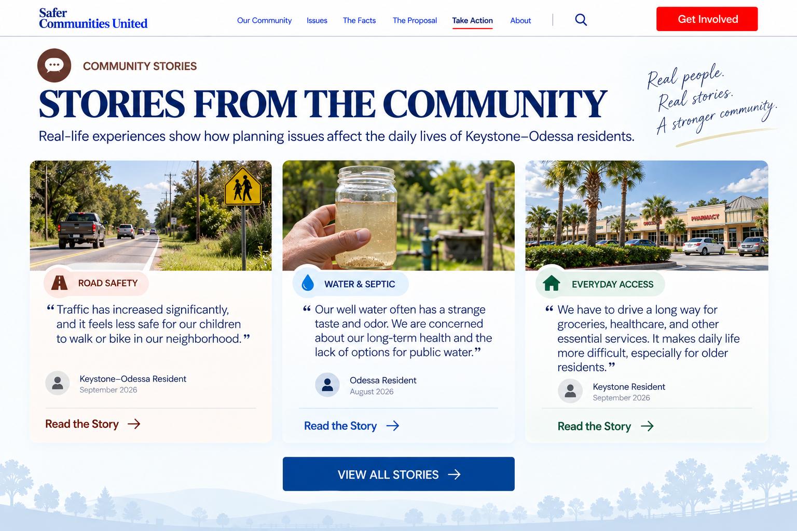
P082-01
P082-02
P082-03
- P082-01 — Road Safety story — road photo
CẦN TÌM ẢNH CHỤP THAY · Ảnh thật đường hai làn có cây, traffic; ưu tiên Keystone–Odessa/Gunn Highway nếu gắn tên địa điểm. Không dùng ảnh nơi khác rồi gọi là Gunn Highway.
Section: A-06
- P082-02 — Water story — cloudy-water glass
CẦN TÌM ẢNH CHỤP THAY · Chỉ minh họa sample story, không ảnh chứng minh water contamination tại Odessa.
Section: A-06
- P082-03 — Everyday Access story — pharmacy/shops
CẦN TÌM ẢNH CHỤP THAY · Ảnh thật khu dịch vụ/retail; không tự gắn địa chỉ hoặc khẳng định cơ sở nằm trong/outside Plan boundary.
Section: A-06
PDF 87,88 — Action - Approved Petition UI preview
Mở file gốc không overlay · 887 × 1774
P087-01
- P087-01 — Petition backdrop — cảnh cây/đường hai bên
CẦN TÌM ẢNH CHỤP THAY · Chỉ thay background nếu cần; toàn văn petition và mọi consent/field dựng bằng HTML, không thay ảnh cả form.
Section: A-07, A-08